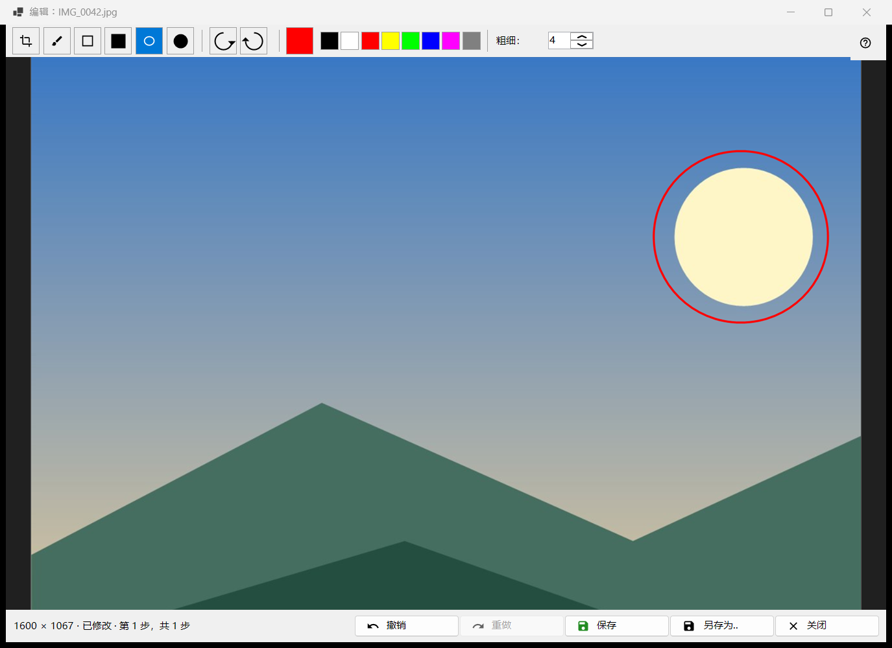
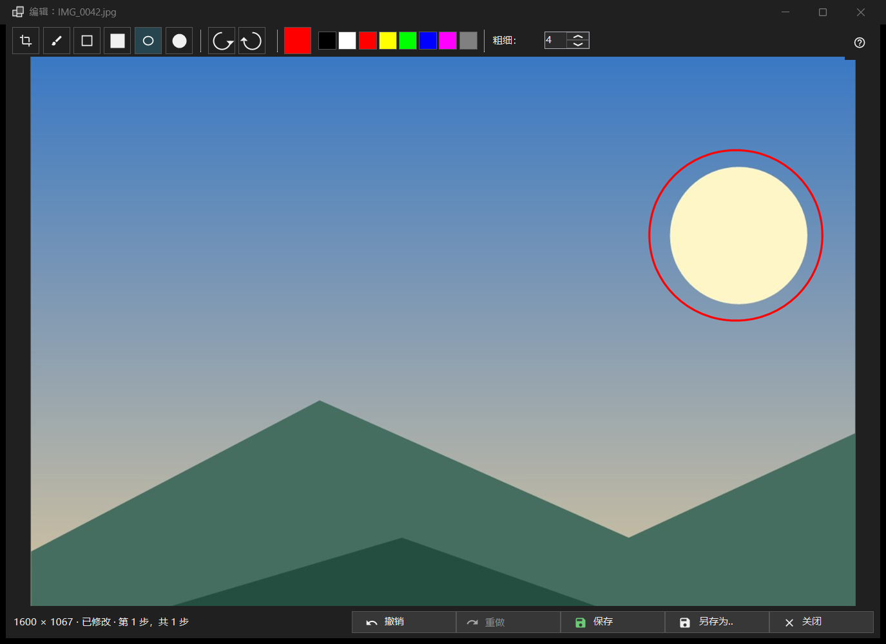

编辑图片
用途说明
针对单张静态图片的小型编辑器：绘制图形、裁剪、旋转和翻转，然后覆盖保存原文件或另存为新文件。它从工具栏的「编辑」按钮或图片菜单的第一项打开，标题中带有图片的文件名，仅适用于静态图片（不适用于动画）。编辑器会重新读取文件，并在自己的副本上工作。


操作顺序
- 在查看器中点击「编辑」。
- 选择工具、颜色和粗细。
- 在图片上绘制，或裁剪、旋转、翻转；「撤销」可后退一步。
- 点击「保存」覆盖原文件，或点击「另存为..」保存为新文件。
- 关闭窗口；如果有未保存的更改，请回答提示的问题。
界面元素
工具
工具条中有：「裁剪」、「画笔」、「矩形」、「实心矩形」、「椭圆」和「实心椭圆」。快捷键是 C、B、R 和 O（实心的没有快捷键）。绘制矩形或椭圆时按住 Shift 可得到正方形或圆。把鼠标停在工具上会显示它的名称和按键。
颜色与粗细
颜色按钮打开颜色对话框，旁边有八个快速色块（黑、白、红、黄、青柠绿、蓝、品红、灰）。粗细范围是 1 到 64 个图像像素（默认 4）；[ 和 ] 键每次调整 1。颜色和粗细对所有工具通用。
裁剪
使用「裁剪」工具，在图片上拖出一个框。只有存在裁剪框时才会出现「应用裁剪」按钮。Enter 的作用相同；Esc 会移除裁剪框而不裁剪。只有您应用之后，图片才会被裁切。
旋转与翻转
「向左旋转」（Ctrl+[）和「向右旋转」（Ctrl+]）会旋转像素。H 键和 V 键分别水平和垂直翻转图片。这会改变图片本身，不同于查看器中的 R 键，后者只旋转显示。
撤销与重做
「撤销」（Ctrl+Z）和「重做」（Ctrl+Y 或 Ctrl+Shift+Z）在最多 20 步的历史中移动，并受内存限制。状态栏显示大小，更改之后显示「已修改」以及「第 N 步，共 M 步」；当限制使最早的步骤被丢弃时，显示「较早的步骤已丢弃：内存已达上限」。
保存
「保存」（Ctrl+S）覆盖原文件，只有在有更改之后才可用；在此之前它的提示文字是「没有可保存的内容：图像未被修改」。对于 JPEG，每个会话会询问一次：「JPEG 将被重新压缩 - 此操作不可撤销。」拍摄日期和其余 EXIF 数据会保留。文件先以临时名称写入再替换；如果保存失败，窗口保持打开并给出原因。
另存为..
打开文件对话框，名称后加上（已编辑）。可选格式有 PNG、JPEG、BMP、TIFF 和 WebP；其他格式的图片默认提供 PNG。压缩包的临时文件夹会被拒绝。覆盖保存原文件后，查看器会重新加载它；同一文件夹中的新文件会被打开；其他位置的文件会在状态栏中给出名称。
「保存」不可用时
状态栏显示「无法覆盖原文件」并附上原因：不支持写入这种格式、文件为只读、没有写入权限、另一个程序占用着文件、文件有多页或多帧（只编辑第一帧）、文件在压缩包内，或文件已丢失。「另存为..」仍然可用。
关闭
「关闭」或 Esc 关闭窗口；Esc 先取消正在进行的笔画，再移除裁剪框。有未保存的编辑时，提示是：「修改尚未保存 - 关闭编辑器并丢失未保存的修改？」「保存」先保存，「不保存」放弃修改，「取消」（默认，Esc 同样）留在编辑器中。即使关闭了确认提示，也会询问这个问题。